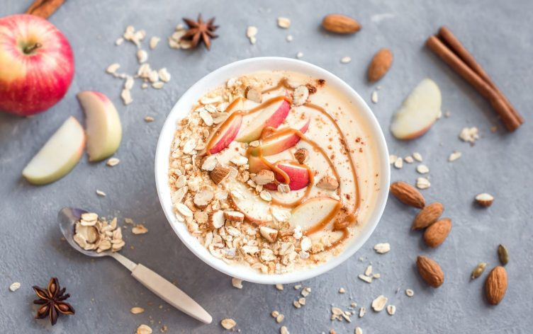

Apple pie breakfast bowl

Description
This delicious breakfast is a fun and tasty twist on your morning oatmeal.
For a grab and go option, prepare the night before and refrigerate in an airtight
container overnight.
- Prep time: 10 minutes
- Cook time: 15 minutes
- Servings: 4
Ingredients
- 125 mL (½ cup) uncooked quinoa
- 250 mL (1 cup) unsweetened fortified plant-based beverage or lower fat milk
- 125 mL (½ cup) water
- 1 mL (¼ tsp) ground cinnamon
- ½ mL (⅛ tsp) ground nutmeg
- 20 mL (1 ½ tbsp) honey
- 1 apple, finely diced
- 5 mL (1 tsp) vanilla extract
- 60 mL (¼ cup) raisin
Steps
- Thoroughly rinse quinoa using a strainer and place in a small pot with a tight-fitting lid.
- Stir in milk, water, cinnamon, nutmeg, honey, and apple.
- Bring to a boil and reduce to a simmer. Cover and cook for 10 minutes or until all the liquid is absorbed.
- Stir in vanilla extract and top with raisins.